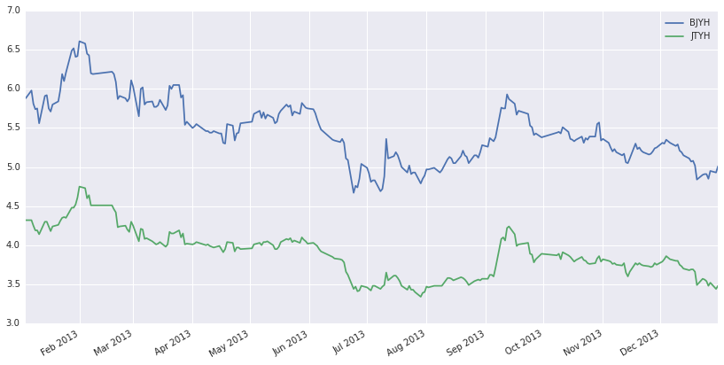
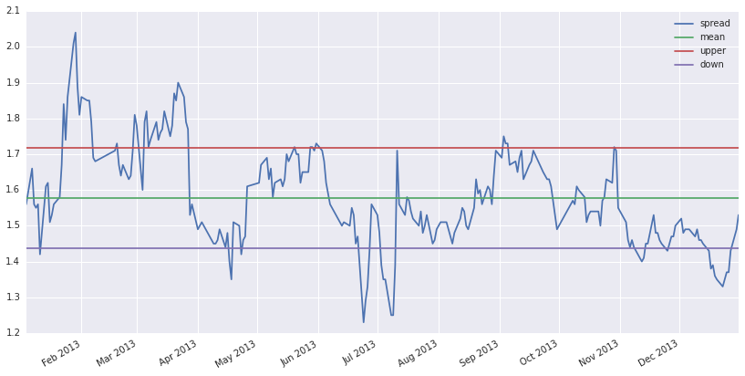

协整的配对交易
2016-07-09
统计套利的配对交易就是基于数学分析的交易策略，利用两只证券的价差（spread）来获取套利机会。价差具有一定关系的两只证券可能存在协整关系（cointegration）。
协整关系存在的条件是：只有当两个变量的时间序列{x}和{y}是同阶单整序列即I(d)时，才可能存在协整关系(这一点对多变量协整并不适用)。因此在进行y和x两个变量协整关系检验之前，先用ADF单位根检验对两时间序列{x}和{y}进行平稳性检验。用单位根检验（ADF）。
这里选取北京银行和交通银行来做研究。
import numpy as np
import pandas as pd
import seaborn
import matplotlib.pyplot as plt
beginDate="2013-01-01"
endDate="2014-01-01"
data1=get_price("601169.XSHG",start_date=beginDate,end_date=endDate,fields=['close'],frequency='daily')
data2=get_price("601328.XSHG",start_date=beginDate,end_date=endDate,fields=['close'],frequency='daily')
z=pd.concat([data1,data2],axis=1)
z.columns=['BJYH','JTYH']
z.plot(figsize=(14,7))
<matplotlib.axes._subplots.AxesSubplot at 0x7fec21774390>

from statsmodels.tsa.stattools import adfuller
def testStationarity(data):
adftest=adfuller(data)
result=pd.Series(adftest[0:4],index=['Test Statistics','p-value','Lags Used','Number of Observation Used'])
for key,value in adftest[4].items():
result['Critical Value (%s)'%key]=value
return result
x=np.array(data1)
y=np.array(data2)
x=x.T[0]
y=y.T[0]
zz=pd.concat([testStationarity(x),testStationarity(y)],axis=1)
zz.columns=['BJYH','JTYH']
zz
| BJYH | JTYH | |
|---|---|---|
| Test Statistics | -2.065881 | -1.740105 |
| p-value | 0.258454 | 0.410576 |
| Lags Used | 0.000000 | 4.000000 |
| Number of Observation Used | 237.000000 | 233.000000 |
| Critical Value (5%) | -2.873814 | -2.874026 |
| Critical Value (1%) | -3.458247 | -3.458731 |
| Critical Value (10%) | -2.573311 | -2.573424 |
p值不显著，说明接受原假设，即存在单位根。下面做一阶差分以后，再检验平稳性。
def diffone(data):
Diff=data.diff(1)
Diff.dropna(inplace=True)
Diff=np.array(Diff).T[0]
return Diff
diffx=diffone(data1)
diffy=diffone(data2)
tz=pd.concat([testStationarity(diffx),testStationarity(diffy)],axis=1)
tz.columns=['BJYH','JTYH']
tz
| BJYH | JTYH | |
|---|---|---|
| Test Statistics | -1.676017e+01 | -6.075262e+00 |
| p-value | 1.312152e-29 | 1.125575e-07 |
| Lags Used | 0.000000e+00 | 5.000000e+00 |
| Number of Observation Used | 2.360000e+02 | 2.310000e+02 |
| Critical Value (5%) | -2.873866e+00 | -2.874135e+00 |
| Critical Value (1%) | -3.458366e+00 | -3.458980e+00 |
| Critical Value (10%) | -2.573339e+00 | -2.573482e+00 |
现在的p值很显著，也就是说可以拒绝原假设，即不存在单位根，序列平稳。
既然他们都是一阶平稳的，那么现在就可以做协整检验了。
from statsmodels.tsa.stattools import coint
a,pvalue,b=coint(x,y)
print (pvalue)
0.00102528244038
p值显著，可以拒绝原假设，则两者存在协整关系。
接下来可以根据两者的协整关系做配对交易了。
mean=(data1-data2).mean()
std=(data1-data2).std()
s1=pd.Series(mean[0],index=data1.index)
s2=pd.Series(mean[0]+std[0],index=data1.index)
s3=pd.Series(mean[0]-std[0],index=data1.index)
data3=pd.concat([data1-data2,s1,s2,s3],axis=1)
data3.columns=['spread','mean','upper','down']
print(mean[0]+std[0],mean[0]-std[0])
data3.plot(figsize=(14,7))
1.7175819797 1.43771213795
<matplotlib.axes._subplots.AxesSubplot at 0x7fec16f93978>

策略的话，简单的策略就是价差超过upper的时候卖空价差，即卖出北京银行，买入交通银行；价差小于down的时候，买入价差，即买入交通银行，卖空北京银行。